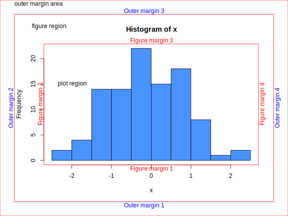

5.1 R 기본 그래프 함수
R의 그래픽은 그래픽 장치에 특정 그림(선, 점, 면 등)을 순차적으로 추가하는 명령(스크립트)을 통해 생성
그래픽 장치: R에서 그래프가 출력되는 장치
- windows: R 프로그램 내에서 출력
- graphic files: pdf, jpeg, tiff, png, bmp 등의 확장자를 갖는 이미지 파일
그래프 장치를 열기 위해 사용되는 함수
windows()또는win.graph(): 그래픽 장치를 열기 위해 사용하는 함수dev.cur(): 현재 활성화된 그래프 장치 확인dev.set(): 다수의 그래프 장치가 열려 있는 경우which = 번호로 변경dev.list(): 현재 열려 있는 그래픽 장치 목록 조회dev.off(): 현재 작업 중인 그래픽 장치 중지graphics.off(): 열려있는 모든 그래픽 장치 중지
R 그래프의 구조

Figure 5.1: R 그래프영역
- Figure region: 범례(legend), x축, y축, 도표 등을 그래프가 표현하는 모든 구성요소를 포함하는 영역(plot region 포함)
- Plot region: 도표 부분 출력되는 영역
- Figure margin: figure region 안에서 plot region의 여백 부분을 나타내며, x, y 축 레이블(label), 제목(title), 각 축의 tick 및 값 등이 주로 위치하는 영역
- Outer margin: figure region 밖의 여백 부분
R 기본 그래프 함수에 대한 강의 내용은 주로 AIMS-R-users에서 참고를 함
그래프의 요소: 점(point), 선(line), 면(area), , 텍스트(text), 축(axis), 눈금(tick), 범례(legend) 등
- 저수준 그래프 함수(low level plotting function): 위의 그래프 요소들을 개별적으로 작업(좌표축 정의, 여백 정의)하기 위한 함수군
- 고수준 그래프 함수(high level plotting function): 그래프의 함수 기능(저수준 그래프 함수)를 모아서 하나의 완성된 도표(산점도, 막대도표, 히스토그램, 상자그림 등)를 생성할 수 있는 함수군
- 고수준 그래프 함수를 호출할 경우 자동으로 그래픽 장치가 열려서
win.graph()등을 사용할 필요가 없으나, 이미 호출된 그래프는 사라짐
- 고수준 그래프 함수를 호출할 경우 자동으로 그래픽 장치가 열려서
주의: 일반적으로 R 기본 그래픽 함수로 도표 작성 시 저수준 그래프 함수는 고수준 그래프 함수로 생성한 그래프에 부가적 기능을 추가하기 위해 사용됨. 따라서 저수준 그래프 함수군은 고수준 그래프 함수을 통해 먼저 생성한 그래프(주로 아래 설명할 plot() 함수) 위에 적용됨.